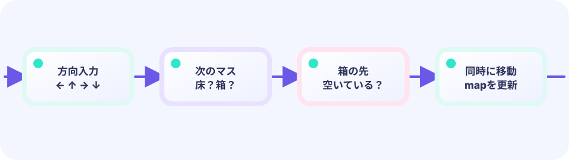

PRESENTATION STATE
moveAnimationは確定済みPlanを読む
盤面を二枚持たず、Commit後の真実とfrom/toだけを保持します。補間中の入力ロックもmove != nilで明確です。
★★★★★ / PLAYABLE
倉庫番の盤面は一手で即座に次の整数状態へ移るのが正解です。しかしDrawも即座に次セルへ飛ばすと硬く見えます。PlanSokobanMoveで歩行・押し・失敗を副作用なしに求め、許可されたPlanを一度だけ盤面へ確定し、保存したfrom/toを9フレーム補間します。補間中は次入力を受けません。
このコースも LEVEL 01 の Update（数字）とDraw（絵）の独立した境界の上にあります。ここでは同じ状態を別の描き方へ投影する方法を一段深く扱います。
ADVANCED FX の設計原則
updatePlay() は衝突・得点・盤面などの正解を先に確定し、結果を値やイベントとして一度だけ渡します。演出側はその事実から補間・姿勢・残像・粒子の時間を進めます。Draw は状態を読むだけで、得点も座標も書き換えません。この境界があるから、派手な画面とGPUなしで試せるユニットテストを両立できます。
PATTERN A09 / PLAN → COMMIT → TWEEN
盤面をtickごとに少しずつ動かすと、補間途中の壁・箱・ゴール判定を定義しなければなりません。
PRESENTATION STATE
盤面を二枚持たず、Commit後の真実とfrom/toだけを保持します。補間中の入力ロックもmove != nilで明確です。
TEST CONTRACT
PLAYABLE / LIVE GO + マウス
盤面は入力時に確定しますが、海老と箱は同じProgressで滑らかに進みます。押し終わりに土煙、ゴール到達に二重波、最後の手の補間後にクリア演出が出ます。
はじめて読む人へ
タイル地図は壁・床・ゴールを番号で並べた方眼紙。押し演出は箱が一マス動いた瞬間だけ出す塵です。Updateでmap[y][x]を書き換え、Drawで地図→箱→塵→ゴールの輝きを描きます。 Go用語メモ：整数型（int）は小数を持たない数、浮動小数点型（float32/float64）は小数を持てる数、typeはデータの箱の種類を決める言葉、funcは処理をひとまとめにする関数の印です。[]TはTを順番に並べるリスト、appendはその末尾へ一つ足す命令です。Updateは数字と状態を進め、Drawはその結果を絵にします。
このページの1本
説明と次のコードを対応させてから、ゲームで変化を確かめよう。
if pushed { fx.Dust(boxX, boxY) }
DEEP DIVE / PLAN → COMMIT → TWEEN
MovePlanにはPlayerFrom/Toと、押す場合だけBoxIndex・BoxFrom/Toがあります。Commit後のplayer/boxesが唯一の盤面真実です。moveAnimationは同じPlanとTweenを表示用に保持し、完了時に土煙・ゴール波・クリア紙吹雪を出します。
壁・箱からAllowedと移動先を返す。
PlanSokobanMove(...)
playerと必要なboxを整数セルへ更新。
apply(plan)
from/toをEaseしてDraw座標にする。
Lerp(from, to, t)
TRACE IT / RULE → MOTION → PIXELS
壁、空き、箱の先が空き、箱の先も塞がるケースを表で試します。Allowed=falseなら盤面もTweenも作りません。
IN THE DEMO
正解は入力時にCommit済みです。完了コールバックは演出だけを行い、二重移動を防ぎます。
plan := vfxmotion.PlanSokobanMove(player, direction, walls, boxes)
if !plan.Allowed { return }
commit(plan) // integer board truth changes once
g.move = &moveAnimation{
plan: plan, tween: vfxmotion.NewTween(9),
}
// Draw lerps plan.PlayerFrom → plan.PlayerTo.TEST THE CONTRACT
空きへ歩く、壁、箱を押す、箱が箱に阻まれる、箱が壁に阻まれるを画像なしで比較します。
FAILURE MODE
0.5マスの箱がどのゴールにいるか曖昧になり、Undo・保存・クリア判定が壊れます。
DESIGN PAYOFF
Planを作って確定し、表示だけ補間する形は、グリッド上の行動を安全に演出する標準です。
FEEDBACK